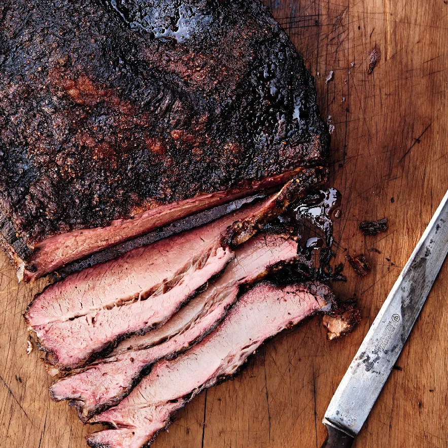

The Best Smoked Brisket Outside of Texas
Jump to RecipeUpon graduating from college, I found myself at a crossroads, uncertain of what path to pursue next. Amidst the chaos of transitioning from student life to the "real world," I stumbled upon an unexpected passion that would shape my culinary journey for years to come - smoking meats. It all began with a simple gift - a Traeger smoker - bestowed upon me by my family as a token of celebration for completing my academic endeavors. Little did I know that this humble appliance would ignite a fervent love affair with the art of smoking meats.
As a novice pitmaster, I embarked on a journey of discovery, delving into the intricate world of smoking techniques, meat selection, and flavor profiles. I immersed myself in the nuances of different cuts of meat, learning to discern between brisket and pork shoulder, ribeye and sirloin. Understanding the importance of meat grades became paramount, as I sought out the highest quality cuts to elevate my smoking endeavors to new heights.
Among the myriad of smoked delicacies that graced my Traeger smoker, one dish emerged as a perennial favorite - smoked brisket. The allure of brisket lies not only in its tender, melt-in-your-mouth texture but also in the ritualistic process of transforming a humble cut of beef into a culinary masterpiece. From the painstaking selection of the perfect brisket, meticulously trimming away excess fat, to the slow and steady hours spent coaxing out its rich smoky flavor, each step is imbued with anticipation and reverence for the craft.
As the wisps of fragrant smoke danced around my backyard, I found solace in the rhythmic cadence of tending to the smoker, a meditative ritual that transported me away from the stresses of daily life. With each batch of brisket that emerged from the smoker, I honed my skills, refining techniques and experimenting with flavor profiles to create the perfect balance of smoke, spice, and succulence. And as I shared the fruits of my labor with friends and family gathered around the dinner table, I realized that the true essence of smoking meats lies not only in the food itself but in the shared experiences and memories forged over the crackle of the smoker and the aroma of sizzling meat.
